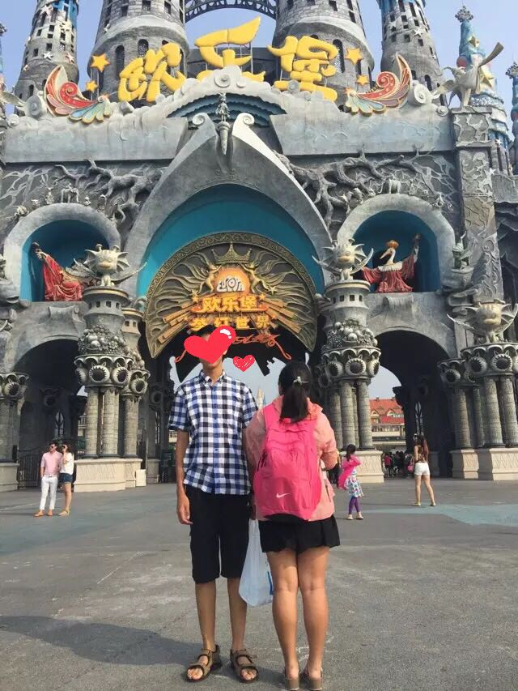
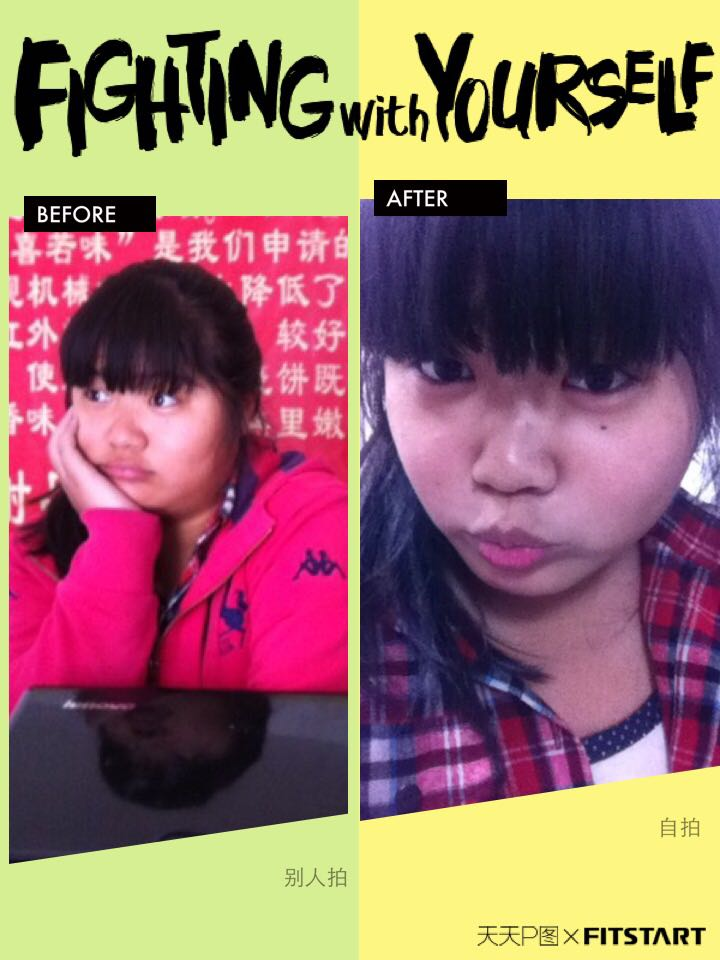
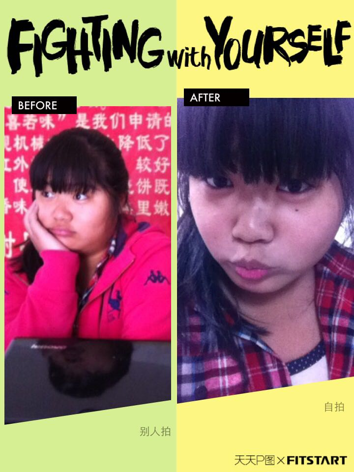
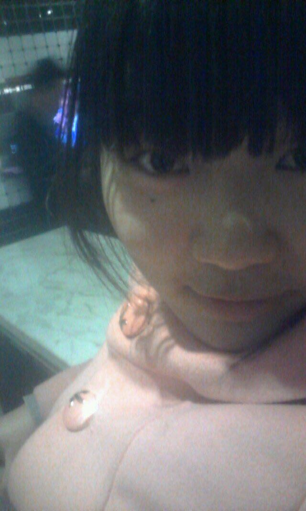
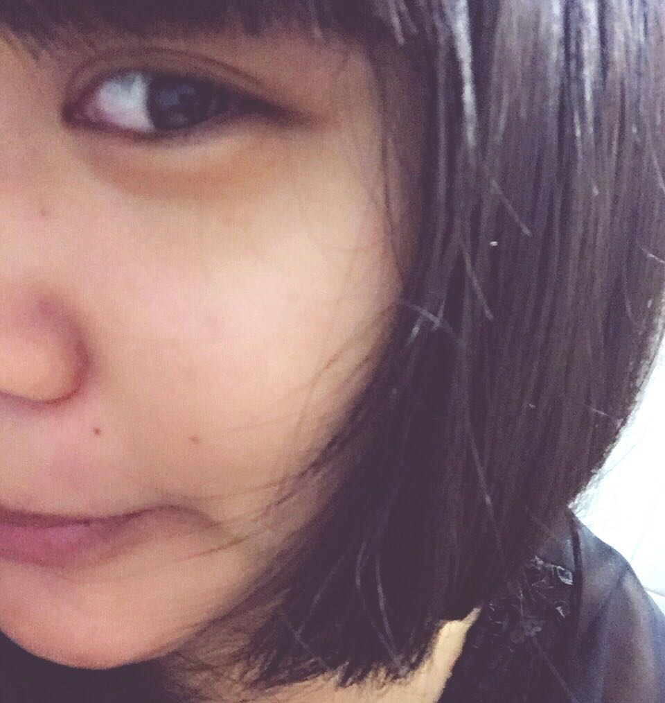
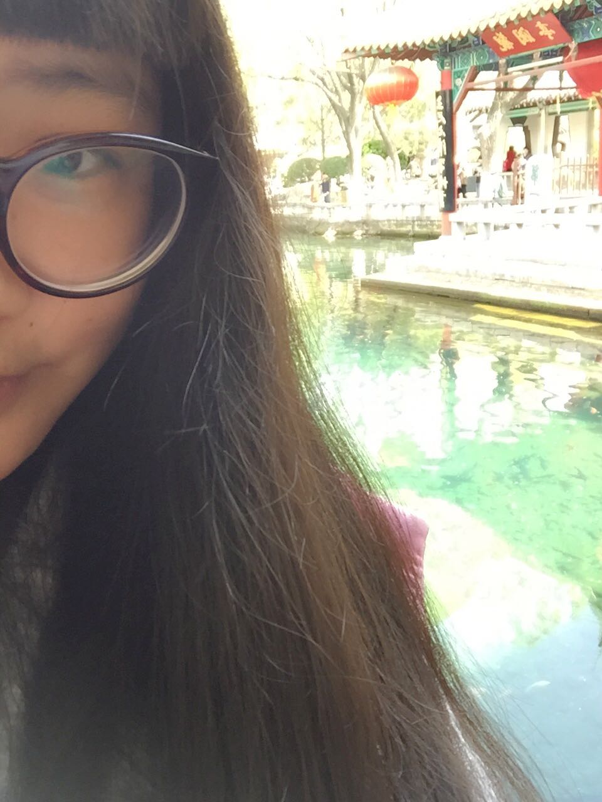
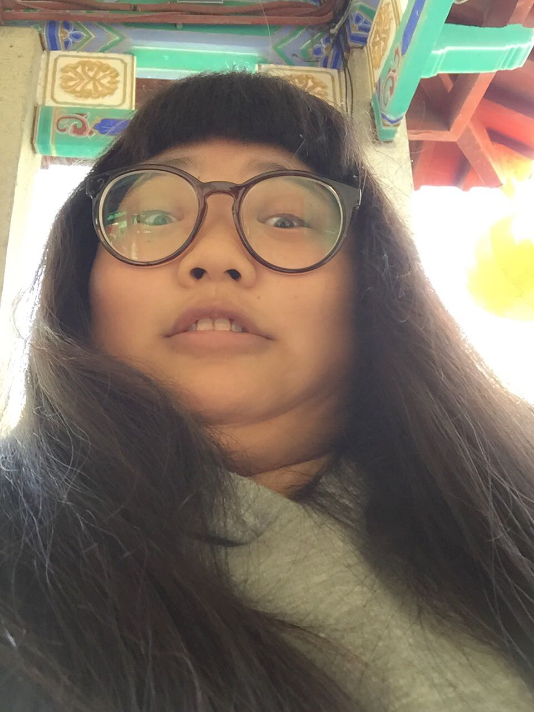
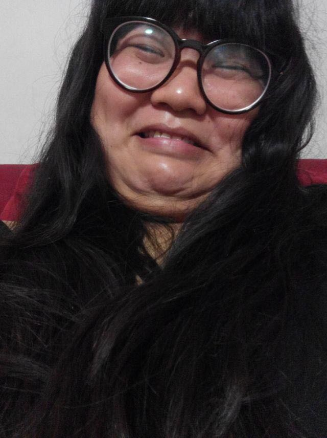
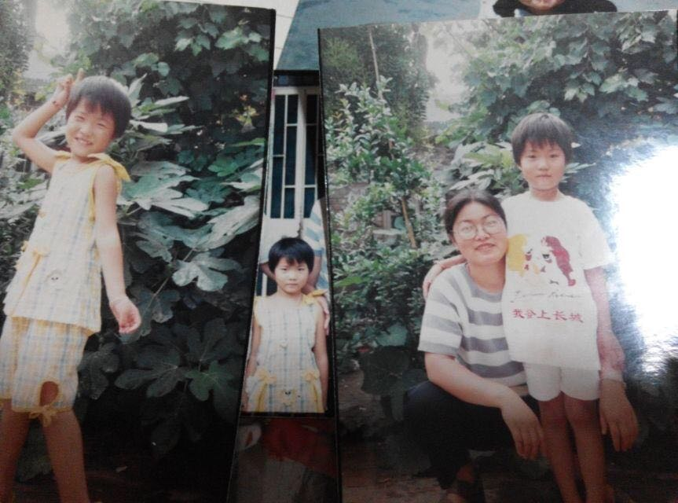

正文: 15年7月24日17点17
今天突然收到邮件说有两个人关注我。顺便就上了下知乎。嗯。顺便说下我170斤了！！！！然后过来晒张图！！！ 胖成猪～————————华丽分割线————————
2015-4-10 7点47(原谅我偷懒在上面补)
其实我是想说在这个100斤变120的题目里为毛会有胖了又瘦下来了这种事情？不是应该只说胖的事情给胖子一个安慰吗？为什么要补上瘦下来的照片？真是世风日下人心不古啊(balabala)。好吧。我就勉为其难的承认我是眼热那些瘦下来的人了！！！怎样怎样！！！胖子怎么了？你们这些从来都没胖过的人人生都不完整！！！只有胖过了才能体会到这个世界深深地恶意才能善待这个社会好吗！！！虽然胖了极有可能瘦不回去但也可以自豪的讲我曾经瘦过啊。嗯？楼歪了。。。好吧。我就是想说楼上的为什么狠心放瘦下来的图片。我们应该尊重题主只放胖的好吗。都讲了开启逗比模式好吗。都说了要八一八心酸史了好吗。好吗！好吗！！！
——————————————————————多图预警
看了下前几个发现都是最后减肥成功的。妥妥的正能量啊。看完瞬间感觉没爱了。But这题分明就是让我们来传播负能量的好吗。(拼命挤开人群，奋力冲到第一)传播负能量这个光荣伟大又艰巨的任务请交给我吧。看我是如何一步一步胖到84公斤的。168斤啊！！！嗯。本人身高167左右～
从10年开始长胖。一直到现在从未停止过。本以为130斤就是极限了。没想到胖到了140。当我以为140就是极限的时候。我150了！！！我终于觉得自己不会在胖了。今年过完年一上称84公斤！！！168斤啊！！！我妈说了如果我胖到170斤就把我从家里踢出去！！！
好了。废话不多说上图。上几张不算胖的时候的。
 这张脸胖了。在此想说一句。就是我自我觉得自己拍照技术略好。会刻意回避自己的短处。照片以自拍居多。来一张自拍和别人拍的图片证明下。。。。真是不忍直视。自己都要看瞎了啊！！！所以说别人拍的照片才是真实的你啊。自拍根本就不是你啊。完了。看了自己的图片晚上要做噩梦了。。。（#－.－）
这张脸胖了。在此想说一句。就是我自我觉得自己拍照技术略好。会刻意回避自己的短处。照片以自拍居多。来一张自拍和别人拍的图片证明下。。。。真是不忍直视。自己都要看瞎了啊！！！所以说别人拍的照片才是真实的你啊。自拍根本就不是你啊。完了。看了自己的图片晚上要做噩梦了。。。（#－.－）就因为自拍的欺骗从不敢让别人拍照。所以全身照很少。胖了以后更是特别喜欢只照半边脸！！！半边！！而且这个半边脸越来越小。露的脸越来越少啊有没有！！！心塞～而且最大的问题是胖了以后整个人都逗比了好吗！！！经常自黑有没有！！！譬如说这样。或者这样是不是感觉没爱了！！！这还不算。前几天拍了张照片直接。。。
——————————分割线————————
15年3月31日13点30
嗯。其实我是来给自己补刀的。这是我小时候照片。是不是瘦瘦哒。小时候记忆最深刻的就是每次称体重都是60斤。(忘记什么年纪了)我妈每次都叹气说你怎么吃不胖啊？一吃饭就各种给我夹菜。我特么的小时候不喜欢吃肉啊！！！不喜欢吃肉！！！我妈天天都各种惆怅啊！！！
现在。(我先躲厕所哭一会儿)吃饭必须有肉。妥妥的肉食动物。无肉不欢呐。我妈的变化就是。。。你怎么还吃！都胖成什么样儿了！别吃了！！一把夺走我正在啃的排骨之类的东西。
我就想知道小时候温柔善良美丽大方可爱漂亮还瘦瘦哒我到底经历了什么才能长成现在这个样子！！！